Lab7
I spent a total of around 12 hours on this lab. I aimed for proficiency, so this lab is a bit more lacking.
Introduction
In this lab, I implemented the 128-bit AES cipher specification in SystemVerilog.
Technical Documentation:
The source code for the project can be found in the associated Github repository.
Block Diagrams
Note that the block diagrams corresponding to the starter code are omitted to save time.
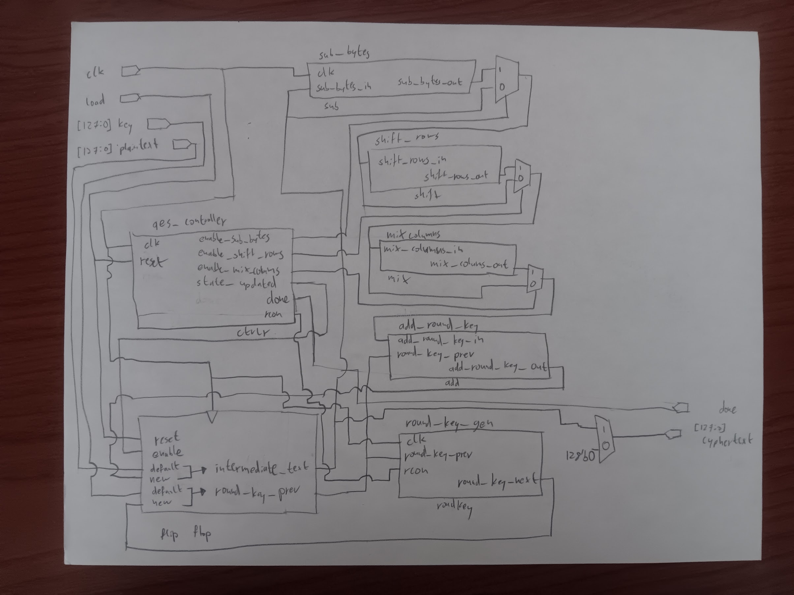
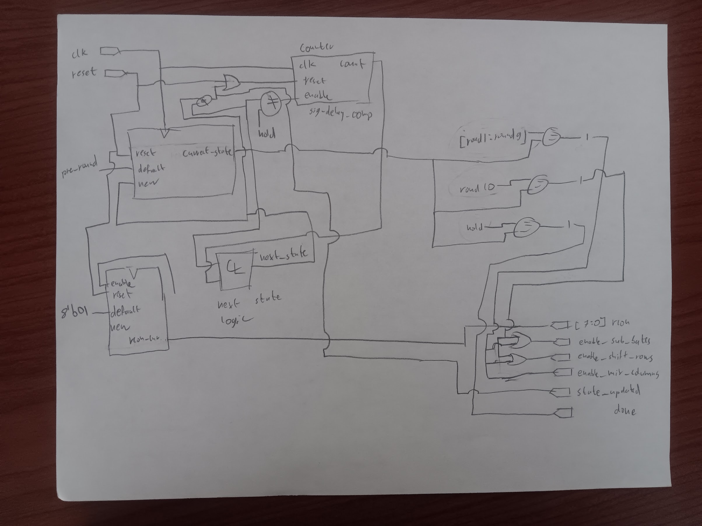
Results and Discussion
The simulations all work without issues and the design even synthesizes in Radiant. Whilst debugging my code, the vast majority of issues were related to the timing of signals. This makes sense because we have not worked with complex timing too much in this class as of yet. The good news is that these things are easy to find in the waveforms.
One bug of note was a baked-in timing assumption that the load signal would be asserted for more clock cycles than it was in the spi testbench. Adding an extra cycle of delay at the start of the pre-round solved this problem.
Testbench Simulation
Both of the provided tests core and spi pass successfully. Expand the blocks below to see more details.
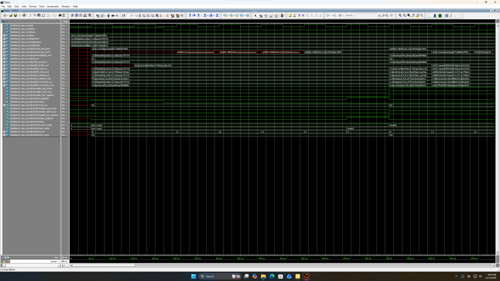
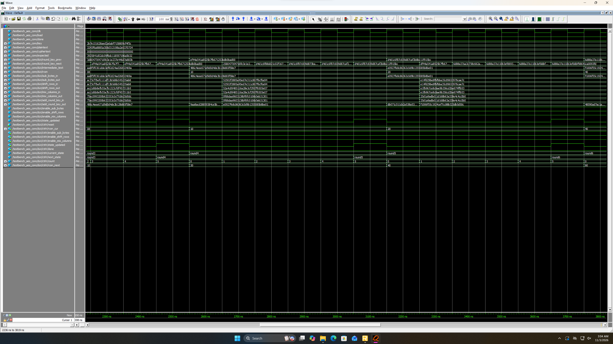
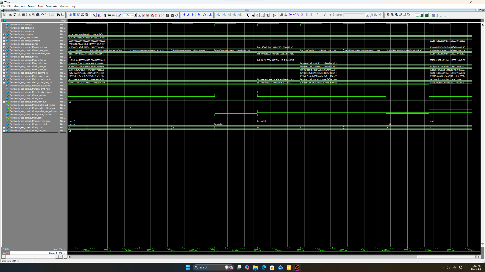
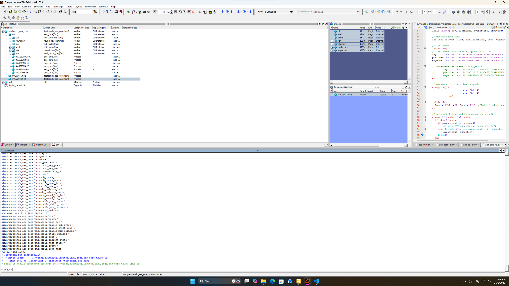
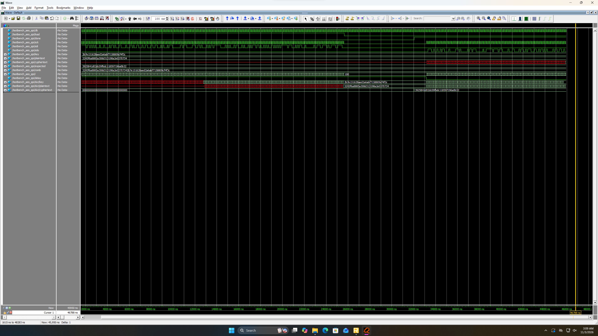
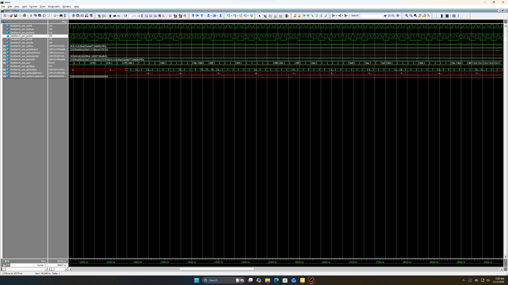
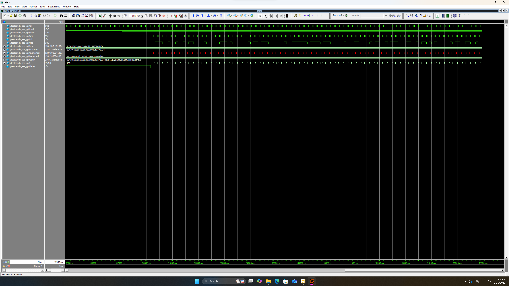
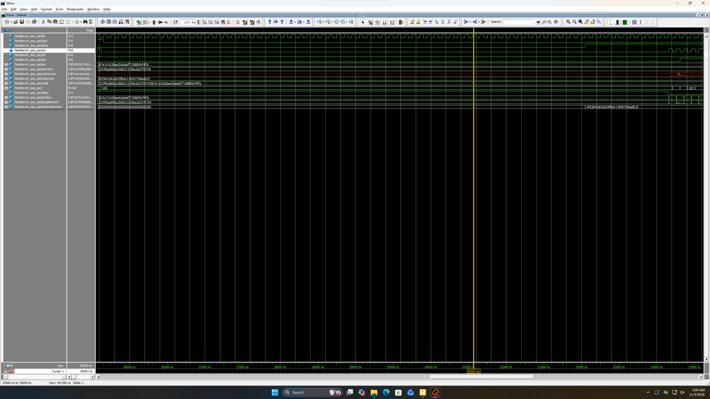
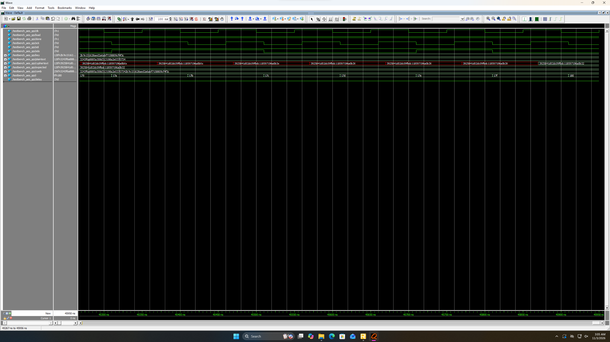
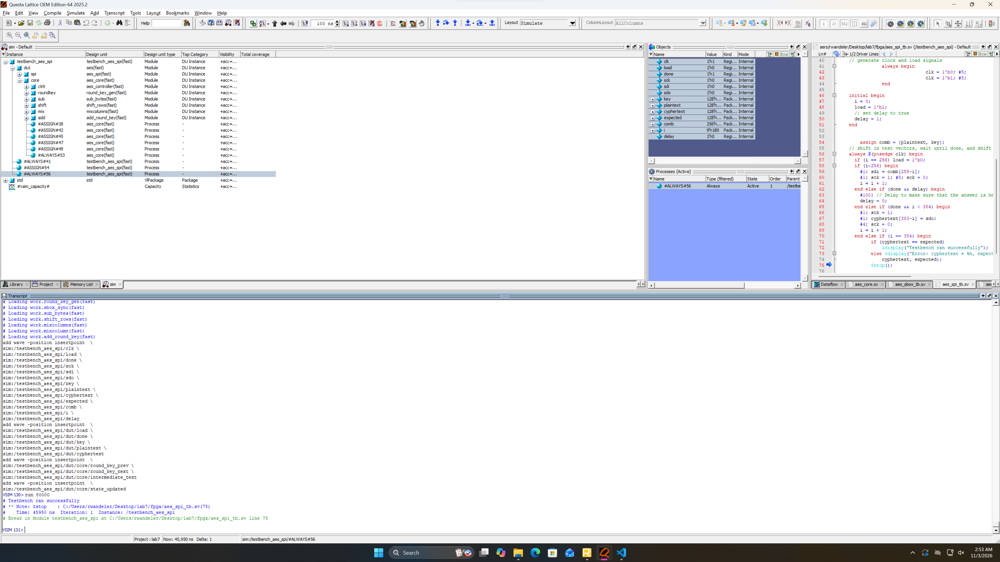
Conclusion
I managed to successfully implement the functionality required to meet the proficiency specification by the lab instructions.
As mentioned at the top, I spent a total of around 12 hours on this lab.
AI Prototype Summary
I chose to prompt google Gemini 3.1 Pro.
After feeding it the AES Specification PDF, the initial prompt that I used was:
Write SystemVerilog HDL to implement the KeyExpansion logic described in the FIPS-197 uploaded document. The module should be purely combinational, using the previous key and current round number to calculate the next key. Assume other required modules (SubWord and RotWord) are already implemented.
The first thing that stood out to me was the spelling errors in some of the prose. Besides that though, the code seems quite reasonable. I appreciate that the source splits the 128-bit key into the 4 words (columns), as this makes the logic easier to parse. I should incorporate this into my design going forward. One thing of note is that this code hard-codes the rcon values as opposed to computing them or taking them in as an input. This might end up taking a few more logic elements but this is probably negligible.
Here is the SystemVerilog implementation for the purely combinational AES-128 Key Expansion round, based on the specifications in “NIST.FIPS.197-upd1.pdf”. The implementation derives the next 128-bit round key from the previous 128-bit round key (four 32-bit words) and the current round number. For AES-128 (\(Nk=4\)), the first word of the new key applies SubWord, RotWord, and the Round Constant (Rcon), while the subsequent three words use a simple XOR with the newly generated previous word.
module KeyExpansion_128 (
input logic [127:0] prev_key, // w[i-4], w[i-3], w[i-2], w[i-1]
input logic [3:0] round_num, // round number (1 to 10)
output logic [127:0] next_key // w[i], w[i+1], w[i+2], w[i+3]
);
// Internal 32-bit word signals
logic [31:0] w0, w1, w2, w3;
logic [31:0] next_w0, next_w1, next_w2, next_w3;
logic [31:0] temp, rot_out, sub_out, rcon_word;
// Unpack the previous 128-bit key into four 32-bit words
assign {w0, w1, w2, w3} = prev_key;
// 1. RotWord on w[i-1]
RotWord rot_inst (
.in_word (w3),
.out_word(rot_out)
);
// 2. SubWord on the rotated word
SubWord sub_inst (
.in_word (rot_out),
.out_word(sub_out)
);
// 3. Rcon calculation (only the most significant byte varies, based on x^(j-1))
always_comb begin
case (round_num)
4'h1: rcon_word = 32'h01000000;
4'h2: rcon_word = 32'h02000000;
4'h3: rcon_word = 32'h04000000;
4'h4: rcon_word = 32'h08000000;
4'h5: rcon_word = 32'h10000000;
4'h6: rcon_word = 32'h20000000;
4'h7: rcon_word = 32'h40000000;
4'h8: rcon_word = 32'h80000000;
4'h9: rcon_word = 32'h1B000000;
4'hA: rcon_word = 32'h36000000;
default: rcon_word = 32'h00000000;
endcase
end
// 4. Calculate the next 4 words
always_comb begin
// For i = 0 (mod Nk), temp is SubWord(RotWord(w[i-1])) XOR Rcon[i/Nk]
temp = sub_out ^ rcon_word;
// w[i] = w[i-Nk] XOR temp
next_w0 = w0 ^ temp;
// For remaining words: w[i] = w[i-Nk] XOR w[i-1]
next_w1 = w1 ^ next_w0;
next_w2 = w2 ^ next_w1;
next_w3 = w3 ^ next_w2;
end
// Pack the next words into the output 128-bit key
assign next_key = {next_w0, next_w1, next_w2, next_w3};
endmoduleKey Expansion Logic Details
- Word Grouping: The algorithm takes the previous 128-bit key and splits it into four 32-bit words.
- Rcon Lookup: The
Rconvalues inject a round-specific constant to eliminate symmetries, taking values based on polynomial multiplication in \(GF(2^{8})\). - Transformation Functions:
ROTWORD()performs a cyclic permutation of the word’s 4 bytes, whileSUBWORD()applies the S-box substitution to each byte independently.
In a new session with clean context, I then prompted the model with:
Write SystemVerilog HDL to implement the following logic:
i = 0 while i < Nk do w[i] <- key[4*i..4*i+3] i <- i+1 end while while i <= 4 * Nr + 3 do temp <- w[i-1] if i mod Nk = 0 then temp <- module1(module2(temp)) (+) Rcon[i/Nk] else if Nk > 6 and i mod Nk = 4 then temp <- module1(temp) end if w[i] <- w[i-Nk] (+) temp i <- i + 1 end while return wAssume module1 and module2 are existing modules that can be instantiated. (+) refers to XOR. Unwrap the loop in the provided pseudo code so it uses the previous iterations output to generate the new iteration.
Do not use any existing knowledge of the AES specifications in your answer.
This code is bad. For starters it is entirely combinational, so will not fit in the FPGA. Additionally it uses older SystemVerilog keywords such as wire. It is also anything but easily legible. Variable names are similar to the pseudocode, but not useful to someone reading it.
Here is the SystemVerilog implementation that structuraly unrolls the provided pseudo-code loops using generate blocks. Because module1 and module2 are defined as instantiate-able modules (rather than functions), a generate loop is required to unroll the logic and chain the structural hardware together.
module logic_unroller #(
parameter int Nk = 4,
parameter int Nr = 10,
parameter int WORD_WIDTH = 32
)(
input logic [7:0] key [0 : 4*Nk-1],
input logic [WORD_WIDTH-1:0] Rcon [0 : (4*Nr+3)/Nk],
output logic [WORD_WIDTH-1:0] w [0 : 4*Nr+3]
);
genvar i;
generate
// Unwrap the first loop: i = 0 to Nk - 1
// w[i] <- key[4*i..4*i+3]
for (i = 0; i < Nk; i++) begin : gen_init_loop
// Assuming concatenation to map 4 bytes into a single word
assign w[i] = {key[4*i], key[4*i+1], key[4*i+2], key[4*i+3]};
end
// Unwrap the second loop: i = Nk to 4 * Nr + 3
for (i = Nk; i <= 4 * Nr + 3; i++) begin : gen_calc_loop
wire [WORD_WIDTH-1:0] temp_in;
wire [WORD_WIDTH-1:0] mod1_out;
wire [WORD_WIDTH-1:0] mod2_out;
wire [WORD_WIDTH-1:0] temp_final;
// temp <- w[i-1]
assign temp_in = w[i-1];
// if i mod Nk = 0 then
if (i % Nk == 0) begin : gen_mod_0
module2 u_module2 (
.in_data(temp_in),
.out_data(mod2_out)
);
module1 u_module1 (
.in_data(mod2_out),
.out_data(mod1_out)
);
// temp <- module1(module2(temp)) (+) Rcon[i/Nk]
assign temp_final = mod1_out ^ Rcon[i/Nk];
end
// else if Nk > 6 and i mod Nk = 4 then
else if (Nk > 6 && (i % Nk == 4)) begin : gen_mod_4
module1 u_module1 (
.in_data(temp_in),
.out_data(mod1_out)
);
// temp <- module1(temp)
assign temp_final = mod1_out;
end
// Unspecified implicit else branch (temp remains unchanged)
else begin : gen_mod_default
assign temp_final = temp_in;
end
// w[i] <- w[i-Nk] (+) temp
assign w[i] = w[i-Nk] ^ temp_final;
end
endgenerate
endmoduleKey Implementation Details:
- Unwrapping the Loop: The
genvarandgenerate forloops construct hardwired instances iteratively at compile time. Instead of a clocked loop in a state machine, the combinational paths automatically chain outputs of iterationi-1andi-Nkinto the hardware for iterationi. - Conditional Hardware Instantiation: The
if / else if / elsestatements inside the generate block dictate whether the synthesizer placesmodule1andmodule2, justmodule1, or just a wire pass-through fortempat each specific iteration step index. - Module Interconnections: To adhere to the requirement of instantiating modules, I utilized intermediatery
wiretypes inside each unrolled index block. - Data Sizing: I used a generalized parameterized word mapping, where
keyis packed sequentially 4-bytes at a time per index based on your[4*i..4*i+3]array bounds.
LLM’s are good at generating code/prose for problems that already have been solved. When presented with the AES specification (along with the knowledge of AES), the code was clean and easy to parse. When it was generated with random pseudocode and specifically instructed to not interpret it as AES, it was a mess. When working with an LLM to develop code for a project, it would definitely be worth refining prompts and context to the problem prior to solving it. I assume that running the second prompt through an LLM for a few rounds could refine it (especially the pseudocode) into a state that yields more satisfactory results when fed to the LLM.